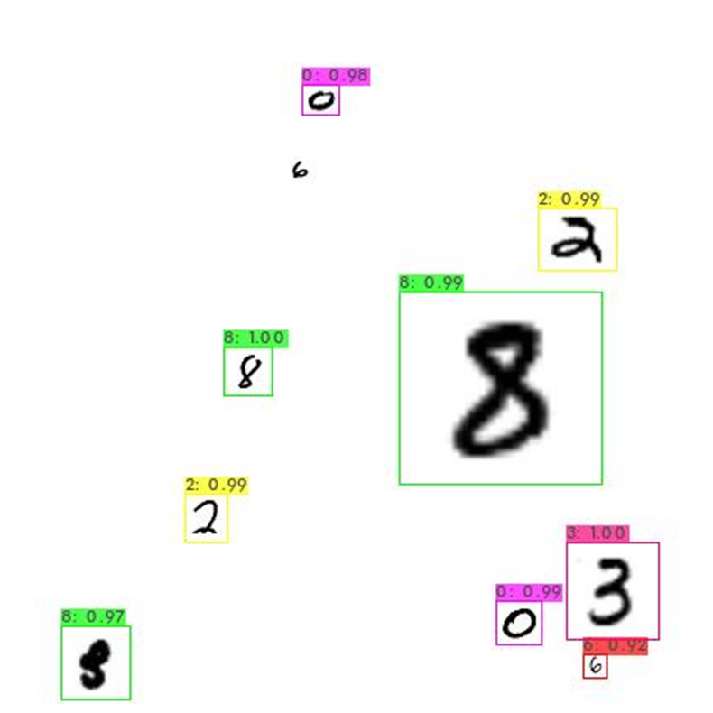
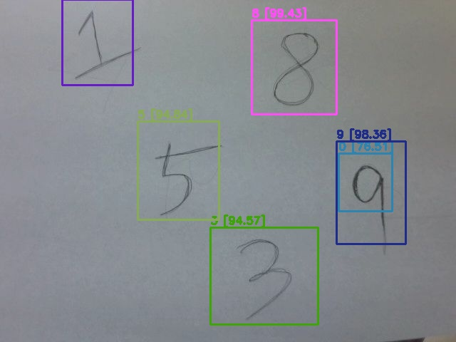
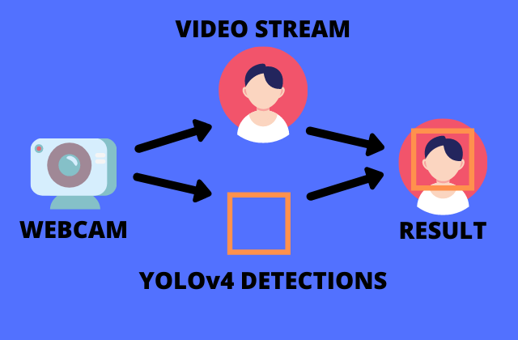

# define helper functions
def imShow(path):
import cv2
import matplotlib.pyplot as plt
%matplotlib inline
image = cv2.imread(path)
height, width = image.shape[:2]
resized_image = cv2.resize(image,(3*width, 3*height), interpolation = cv2.INTER_CUBIC)
fig = plt.gcf()
fig.set_size_inches(18, 10)
plt.axis("off")
plt.imshow(cv2.cvtColor(resized_image, cv2.COLOR_BGR2RGB))
plt.show()
# use this to upload files
def upload():
from google.colab import files
uploaded = files.upload()
for name, data in uploaded.items():
with open(name, 'wb') as f:
f.write(data)
print ('saved file', name)
# use this to download a file
def download(path):
from google.colab import files
files.download(path)Assignment · YOLOv4 Custom Object Detector
Testing a custom-trained YOLOv4 model on training images, webcam snapshots and live webcam video in Google Colab
YOLO assignment: inference with a custom-trained Darknet YOLOv4 model on images and webcam streams.
Project at a glance
Problem: Demonstrate inference with a custom YOLOv4 model in Google Colab.
Contribution / scope: This page documents the inference workflow, configuration changes, and webcam integration; the training notebook is absent.
Recorded evidence: Recorded examples include a training-image detection and webcam inference code. Reported percentages are detection confidence scores.
Limitations: No held-out precision, recall, or mAP evaluation is included. The training image cannot establish generalization, and model weights and Drive assets are not bundled.
NoteAbout this edition
English text and comments were edited for publication. Outputs are archived notebook results, not newly executed results. Exercise prompts and reference illustrations are course material; implementations and handwritten work are presented as coursework. Source and reproducibility notes.
TipSummary
A YOLOv4 detector was trained with the Darknet framework on a custom dataset (the training notebook is not included here; the trained weights yolov4-custom_best.weights are loaded from Google Drive). This notebook covers the test phase: switching the configuration to single-image inference, running the detector on a training image, and then using Colab’s JavaScript bridge to run it on a webcam snapshot and on a live webcam video stream with bounding boxes drawn as a transparent overlay.
YOLO Test (training part omitted)
(1) Test on a training image
- In
yolov4-custom.cfg, setbatch=1andsubdivisions=1for inference.
%cd cfg
!sed -i 's/batch=64/batch=1/' yolov4-custom.cfg
!sed -i 's/subdivisions=16/subdivisions=1/' yolov4-custom.cfg
%cd ../content/gdrive/MyDrive/yolov4/darknet/cfg
/content/gdrive/MyDrive/yolov4/darknet- Run the YOLOv4 detector on a training image (confidence threshold 0.85).
!./darknet detector test data/obj.data cfg/yolov4-custom.cfg /mydrive/yolov4/training/yolov4-custom_best.weights /content/gdrive/MyDrive/yolov4/darknet/data/obj/10.jpg -thresh 0.85 -dont_show
imShow('predictions.jpg') CUDA-version: 11080 (12000), cuDNN: 8.9.6, CUDNN_HALF=1, GPU count: 1
CUDNN_HALF=1
OpenCV version: 4.5.4
0 : compute_capability = 750, cudnn_half = 1, GPU: Tesla T4
net.optimized_memory = 0
mini_batch = 1, batch = 1, time_steps = 1, train = 0
layer filters size/strd(dil) input output
0 Create CUDA-stream - 0
Create cudnn-handle 0
conv 32 3 x 3/ 1 416 x 416 x 3 -> 416 x 416 x 32 0.299 BF
1 conv 64 3 x 3/ 2 416 x 416 x 32 -> 208 x 208 x 64 1.595 BF
2 conv 64 1 x 1/ 1 208 x 208 x 64 -> 208 x 208 x 64 0.354 BF
3 route 1 -> 208 x 208 x 64
4 conv 64 1 x 1/ 1 208 x 208 x 64 -> 208 x 208 x 64 0.354 BF
5 conv 32 1 x 1/ 1 208 x 208 x 64 -> 208 x 208 x 32 0.177 BF
6 conv 64 3 x 3/ 1 208 x 208 x 32 -> 208 x 208 x 64 1.595 BF
7 Shortcut Layer: 4, wt = 0, wn = 0, outputs: 208 x 208 x 64 0.003 BF
8 conv 64 1 x 1/ 1 208 x 208 x 64 -> 208 x 208 x 64 0.354 BF
9 route 8 2 -> 208 x 208 x 128
10 conv 64 1 x 1/ 1 208 x 208 x 128 -> 208 x 208 x 64 0.709 BF
11 conv 128 3 x 3/ 2 208 x 208 x 64 -> 104 x 104 x 128 1.595 BF
12 conv 64 1 x 1/ 1 104 x 104 x 128 -> 104 x 104 x 64 0.177 BF
13 route 11 -> 104 x 104 x 128
14 conv 64 1 x 1/ 1 104 x 104 x 128 -> 104 x 104 x 64 0.177 BF
15 conv 64 1 x 1/ 1 104 x 104 x 64 -> 104 x 104 x 64 0.089 BF
16 conv 64 3 x 3/ 1 104 x 104 x 64 -> 104 x 104 x 64 0.797 BF
17 Shortcut Layer: 14, wt = 0, wn = 0, outputs: 104 x 104 x 64 0.001 BF
18 conv 64 1 x 1/ 1 104 x 104 x 64 -> 104 x 104 x 64 0.089 BF
19 conv 64 3 x 3/ 1 104 x 104 x 64 -> 104 x 104 x 64 0.797 BF
20 Shortcut Layer: 17, wt = 0, wn = 0, outputs: 104 x 104 x 64 0.001 BF
21 conv 64 1 x 1/ 1 104 x 104 x 64 -> 104 x 104 x 64 0.089 BF
22 route 21 12 -> 104 x 104 x 128
23 conv 128 1 x 1/ 1 104 x 104 x 128 -> 104 x 104 x 128 0.354 BF
24 conv 256 3 x 3/ 2 104 x 104 x 128 -> 52 x 52 x 256 1.595 BF
25 conv 128 1 x 1/ 1 52 x 52 x 256 -> 52 x 52 x 128 0.177 BF
26 route 24 -> 52 x 52 x 256
27 conv 128 1 x 1/ 1 52 x 52 x 256 -> 52 x 52 x 128 0.177 BF
28 conv 128 1 x 1/ 1 52 x 52 x 128 -> 52 x 52 x 128 0.089 BF
29 conv 128 3 x 3/ 1 52 x 52 x 128 -> 52 x 52 x 128 0.797 BF
30 Shortcut Layer: 27, wt = 0, wn = 0, outputs: 52 x 52 x 128 0.000 BF
31 conv 128 1 x 1/ 1 52 x 52 x 128 -> 52 x 52 x 128 0.089 BF
32 conv 128 3 x 3/ 1 52 x 52 x 128 -> 52 x 52 x 128 0.797 BF
33 Shortcut Layer: 30, wt = 0, wn = 0, outputs: 52 x 52 x 128 0.000 BF
34 conv 128 1 x 1/ 1 52 x 52 x 128 -> 52 x 52 x 128 0.089 BF
35 conv 128 3 x 3/ 1 52 x 52 x 128 -> 52 x 52 x 128 0.797 BF
... [141 lines omitted] ...
/content/gdrive/MyDrive/yolov4/darknet/data/obj/10.jpg: Predicted in 704.835000 milli-seconds.
8: 97%
2: 99%
8: 100%
0: 98%
8: 99%
0: 99%
2: 99%
3: 100%
6: 92%
(2) YOLO image test with a webcam
# import dependencies
from IPython.display import display, Javascript, Image
from google.colab.output import eval_js
from google.colab.patches import cv2_imshow
from base64 import b64decode, b64encode
import cv2
import numpy as np
import PIL
import io
import html
import time
import matplotlib.pyplot as plt
%matplotlib inline# import darknet functions to perform object detections
from darknet import *
# load in our YOLOv4 architecture network
network, class_names, class_colors = load_network("/content/gdrive/MyDrive/yolov4/darknet/cfg/yolov4-custom.cfg", "/content/gdrive/MyDrive/yolov4/darknet/data/obj.data", "/content/gdrive/MyDrive/yolov4/training/yolov4-custom_best.weights")
width = network_width(network)
height = network_height(network)
print(width)
print(height)
# darknet helper function to run detection on image
def darknet_helper(img, width, height):
darknet_image = make_image(width, height, 3)
img_rgb = cv2.cvtColor(img, cv2.COLOR_BGR2RGB)
img_resized = cv2.resize(img_rgb, (width, height), interpolation=cv2.INTER_LINEAR)
# get image ratios to convert bounding boxes to proper size
img_height, img_width, _ = img.shape
width_ratio = img_width/width
height_ratio = img_height/height
# run model on darknet style image to get detections
copy_image_from_bytes(darknet_image, img_resized.tobytes())
detections = detect_image(network, class_names, darknet_image)
free_image(darknet_image)
return detections, width_ratio, height_ratio416
416# function to convert the JavaScript object into an OpenCV image
def js_to_image(js_reply):
"""
Params:
js_reply: JavaScript object containing image from webcam
Returns:
img: OpenCV BGR image
"""
# decode base64 image
image_bytes = b64decode(js_reply.split(',')[1])
# convert bytes to numpy array
jpg_as_np = np.frombuffer(image_bytes, dtype=np.uint8)
# decode numpy array into OpenCV BGR image
img = cv2.imdecode(jpg_as_np, flags=1)
return img
# function to convert OpenCV Rectangle bounding box image into base64 byte string to be overlayed on video stream
def bbox_to_bytes(bbox_array):
"""
Params:
bbox_array: Numpy array (pixels) containing rectangle to overlay on video stream.
Returns:
bytes: Base64 image byte string
"""
# convert array into PIL image
bbox_PIL = PIL.Image.fromarray(bbox_array, 'RGBA')
iobuf = io.BytesIO()
# format bbox into png for return
bbox_PIL.save(iobuf, format='png')
# format return string
bbox_bytes = 'data:image/png;base64,{}'.format((str(b64encode(iobuf.getvalue()), 'utf-8')))
return bbox_bytesdef take_photo(filename='photo.jpg', quality=0.8):
js = Javascript('''
async function takePhoto(quality) {
const div = document.createElement('div');
const capture = document.createElement('button');
capture.textContent = 'Capture';
div.appendChild(capture);
const video = document.createElement('video');
video.style.display = 'block';
const stream = await navigator.mediaDevices.getUserMedia({video: true});
document.body.appendChild(div);
div.appendChild(video);
video.srcObject = stream;
await video.play();
// Resize the output to fit the video element.
google.colab.output.setIframeHeight(document.documentElement.scrollHeight, true);
// Wait for Capture to be clicked.
await new Promise((resolve) => capture.onclick = resolve);
const canvas = document.createElement('canvas');
canvas.width = video.videoWidth;
canvas.height = video.videoHeight;
canvas.getContext('2d').drawImage(video, 0, 0);
stream.getVideoTracks()[0].stop();
div.remove();
return canvas.toDataURL('image/jpeg', quality);
}
''')
display(js)
# get photo data
data = eval_js('takePhoto({})'.format(quality))
# get OpenCV format image
img = js_to_image(data)
# call our darknet helper on webcam image
detections, width_ratio, height_ratio = darknet_helper(img, width, height)
# loop through detections and draw them on webcam image
for label, confidence, bbox in detections:
left, top, right, bottom = bbox2points(bbox)
left, top, right, bottom = int(left * width_ratio), int(top * height_ratio), int(right * width_ratio), int(bottom * height_ratio)
cv2.rectangle(img, (left, top), (right, bottom), class_colors[label], 2)
cv2.putText(img, "{} [{:.2f}]".format(label, float(confidence)),
(left, top - 5), cv2.FONT_HERSHEY_SIMPLEX, 0.5,
class_colors[label], 2)
# save image
cv2.imwrite(filename, img)
return filename- YOLO test on a webcam snapshot
try:
filename = take_photo('photo.jpg')
print('Saved to {}'.format(filename))
# Show the image which was just taken.
display(Image(filename))
except Exception as err:
# Errors will be thrown if the user does not have a webcam or if they do not
# grant the page permission to access it.
print(str(err))<IPython.core.display.Javascript object>Saved to photo.jpg
(3) YOLO video test with a webcam

Below is a function to start up the video stream using similar JavaScript as was used for images. The video stream frames are fed as input to YOLOv4.
# JavaScript to properly create our live video stream using our webcam as input
def video_stream():
js = Javascript('''
var video;
var div = null;
var stream;
var captureCanvas;
var imgElement;
var labelElement;
var pendingResolve = null;
var shutdown = false;
function removeDom() {
stream.getVideoTracks()[0].stop();
video.remove();
div.remove();
video = null;
div = null;
stream = null;
imgElement = null;
captureCanvas = null;
labelElement = null;
}
function onAnimationFrame() {
if (!shutdown) {
window.requestAnimationFrame(onAnimationFrame);
}
if (pendingResolve) {
var result = "";
if (!shutdown) {
captureCanvas.getContext('2d').drawImage(video, 0, 0, 640, 480);
result = captureCanvas.toDataURL('image/jpeg', 0.8)
}
var lp = pendingResolve;
pendingResolve = null;
lp(result);
}
}
async function createDom() {
if (div !== null) {
return stream;
}
div = document.createElement('div');
div.style.border = '2px solid black';
div.style.padding = '3px';
div.style.width = '100%';
div.style.maxWidth = '600px';
document.body.appendChild(div);
const modelOut = document.createElement('div');
modelOut.innerHTML = "<span>Status:</span>";
labelElement = document.createElement('span');
labelElement.innerText = 'No data';
labelElement.style.fontWeight = 'bold';
modelOut.appendChild(labelElement);
div.appendChild(modelOut);
video = document.createElement('video');
video.style.display = 'block';
video.width = div.clientWidth - 6;
video.setAttribute('playsinline', '');
video.onclick = () => { shutdown = true; };
stream = await navigator.mediaDevices.getUserMedia(
{video: { facingMode: "environment"}});
div.appendChild(video);
imgElement = document.createElement('img');
imgElement.style.position = 'absolute';
imgElement.style.zIndex = 1;
imgElement.onclick = () => { shutdown = true; };
div.appendChild(imgElement);
const instruction = document.createElement('div');
instruction.innerHTML =
'<span style="color: red; font-weight: bold;">' +
'When finished, click here or on the video to stop this demo</span>';
div.appendChild(instruction);
instruction.onclick = () => { shutdown = true; };
video.srcObject = stream;
await video.play();
captureCanvas = document.createElement('canvas');
captureCanvas.width = 640; //video.videoWidth;
captureCanvas.height = 480; //video.videoHeight;
window.requestAnimationFrame(onAnimationFrame);
return stream;
}
async function stream_frame(label, imgData) {
if (shutdown) {
removeDom();
shutdown = false;
return '';
}
var preCreate = Date.now();
stream = await createDom();
var preShow = Date.now();
if (label != "") {
labelElement.innerHTML = label;
}
if (imgData != "") {
var videoRect = video.getClientRects()[0];
imgElement.style.top = videoRect.top + "px";
imgElement.style.left = videoRect.left + "px";
imgElement.style.width = videoRect.width + "px";
imgElement.style.height = videoRect.height + "px";
imgElement.src = imgData;
}
var preCapture = Date.now();
var result = await new Promise(function(resolve, reject) {
pendingResolve = resolve;
});
shutdown = false;
return {'create': preShow - preCreate,
'show': preCapture - preShow,
'capture': Date.now() - preCapture,
'img': result};
}
''')
display(js)
def video_frame(label, bbox):
data = eval_js('stream_frame("{}", "{}")'.format(label, bbox))
return data# start streaming video from webcam
video_stream()
# label for video
label_html = 'Capturing...'
# initialze bounding box to empty
bbox = ''
count = 0
while True:
js_reply = video_frame(label_html, bbox)
if not js_reply:
break
# convert JS response to OpenCV Image
frame = js_to_image(js_reply["img"])
# create transparent overlay for bounding box
bbox_array = np.zeros([480,640,4], dtype=np.uint8)
# call our darknet helper on video frame
detections, width_ratio, height_ratio = darknet_helper(frame, width, height)
# loop through detections and draw them on transparent overlay image
for label, confidence, bbox in detections:
left, top, right, bottom = bbox2points(bbox)
left, top, right, bottom = int(left * width_ratio), int(top * height_ratio), int(right * width_ratio), int(bottom * height_ratio)
bbox_array = cv2.rectangle(bbox_array, (left, top), (right, bottom), class_colors[label], 2)
bbox_array = cv2.putText(bbox_array, "{} [{:.2f}]".format(label, float(confidence)),
(left, top - 5), cv2.FONT_HERSHEY_SIMPLEX, 0.5,
class_colors[label], 2)
bbox_array[:,:,3] = (bbox_array.max(axis = 2) > 0 ).astype(int) * 255
# convert overlay of bbox into bytes
bbox_bytes = bbox_to_bytes(bbox_array)
# update bbox so next frame gets new overlay
bbox = bbox_bytes